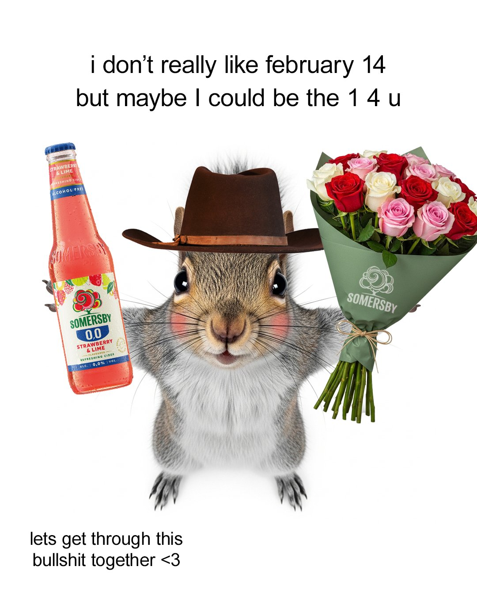
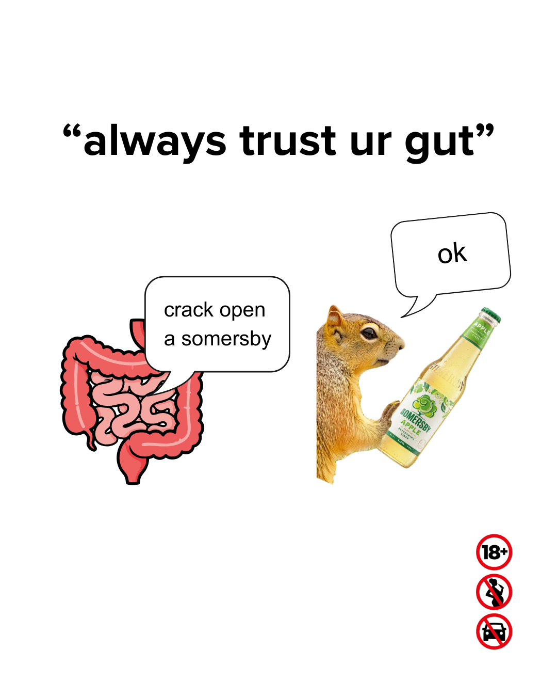
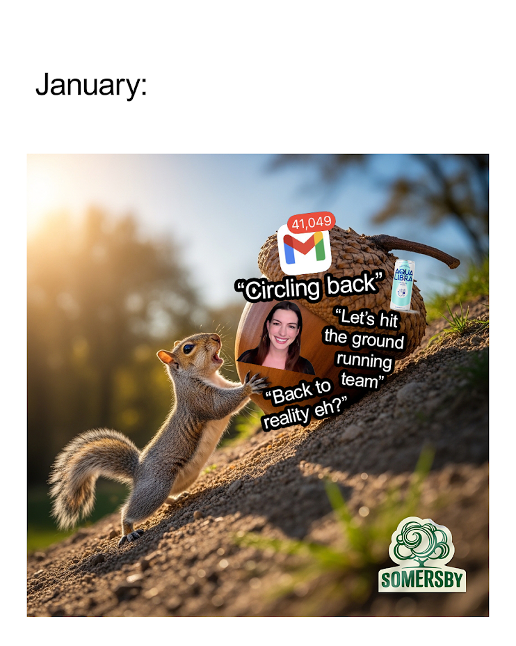
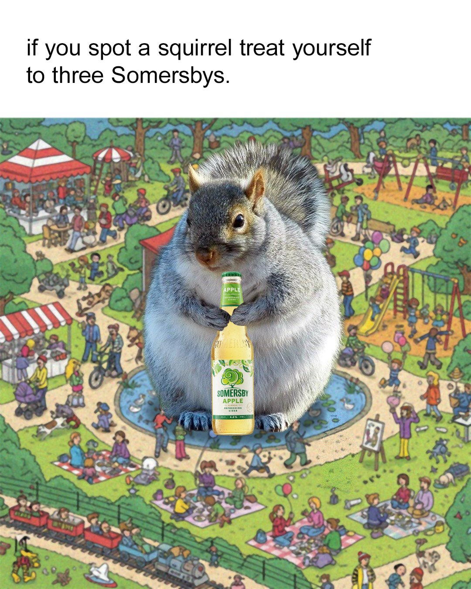
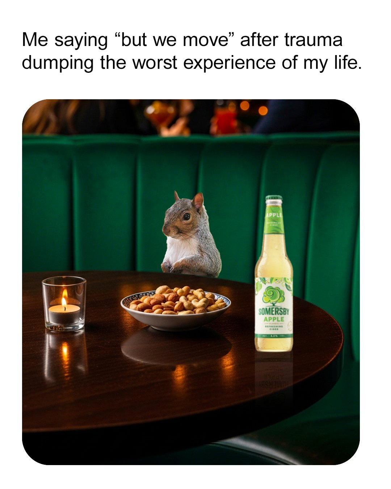
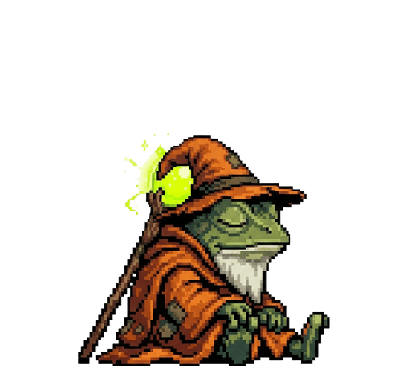

Somersby’s antidote to everyday nonsense
— a well-earned break from the bullshit.
ROLE
Creative Director | AI Creation | Video Editing | Script Writing | Voice Acting
Somersby was quietly drifting into irrelevance. Its social feed had become a graveyard of bottle shots: a glistening cider on a picnic blanket, a hashtag-stuffed caption nobody read, and posts that get twelve likes, three of them from the marketing team. We needed to stop being wallpaper and become the thing people actually stop scrolling for, building real long-term love for the brand along the way.
Modern adult life is a mess of pressure, contradiction and chaotic, tech-led nonsense. Somersby exists to be the opposite: a carefree, joyful escape. So we leant all the way in, building a multi-franchise, entertainment-first world around the brand that gives people a much-needed time-out from the bullshit.
“The Squirrels of Somersby Tree” was a social series of micro dramas. The episodic content used reality TV tropes and meme humour to showcase squirrels navigating the “bullshit” of adult life.
These were supported with social “Nibbles”. Bullshit themed memes and reactives featuring our furry friends, which we built at speed to jump on topical conversations or cultural events hot with our audience.





We created a scurry of shareable squirrels for Giphy to help our audience call out the bullshit, ready to send when words fail them.
“Treeside Confessions” featured a low-fi interview format, sharing stories of escaping adult life “bullshit” whilst embracing a tree (naturally).
“Fruit Gang Reacts” contained a repeatable format where our Somersby fruits react to real-life “bullshit” with witty commentary.
“We set out to entertain and to flip the script on how Somersby shows up in social. We Are Social helped us create a content approach that doesn’t just follow trends, it contributes to them and generates conversations – making Somersby feel like a real part of Gen Z’s world, not a guest in it.”
Maria Henriques, Global Marketing Manager, at Somersby
